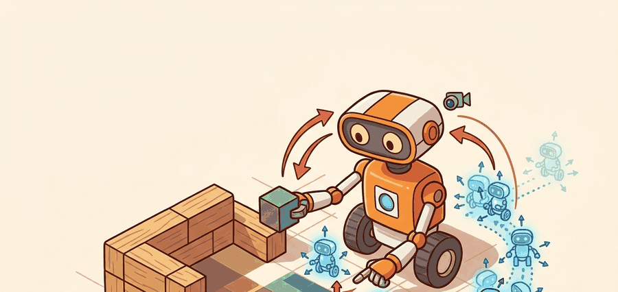

"A particle filter is a map of competing explanations, not just a pose estimate."
A Loop Closure That Came Back With Receipts

Localization with particle filters is the state-estimation half of embodied autonomy. The robot has partial, noisy, time-stamped evidence; it must turn that evidence into a pose, a map, and an uncertainty statement that a planner can actually trust.
This section should move from perceptual aliasing to the particle representation, then to a runnable weight update, then to deployment tests that reveal wrong-mode collapse.
Problem First
A single Gaussian pose estimate can be misleading when the robot starts uncertain or sees repeated structure. A corridor with identical doors can support several plausible locations. Particle filters solve this by representing belief as many weighted hypotheses.
Monte Carlo localization alternates prediction, measurement weighting, and resampling. Particles spread under motion noise, then measurements increase the weight of poses whose expected observations match the sensor data. Resampling focuses compute on likely poses while preserving enough diversity to recover from ambiguity.
A localization result here needs particle count, likelihood model, resampling threshold, map version, covariance or mode summary, and consumer policy. Reporting only the maximum-likelihood pose hides the ambiguity the robot must manage.
Formal Model
For Monte Carlo localization, the posterior is a weighted particle set over robot pose conditioned on motion and sensor likelihoods. The key interface is not the mean pose alone; it is mode count, effective sample size, and covariance before planning commits.
$$ w_t^{(i)} \propto w_{t-1}^{(i)}p(z_t\mid x_t^{(i)},m),\quad \hat{x}_t=\sum_i w_t^{(i)}x_t^{(i)} $$
The evidence terms are proposal motion, sensor likelihood, resampling rule, particle count, and map quality. A particle filter earns trust when it preserves ambiguity long enough instead of collapsing onto the wrong corridor.
- Sample particle motion from the control model and injected noise.
- Compute each particle weight from laser, landmark, or visual likelihood.
- Normalize weights and monitor effective sample size.
- Resample only when degeneracy is high, then publish mean, covariance, and multimodality diagnostics.
Worked Diagnostic
Code Fragment 1 is the particle-filter diagnostic: update a tiny particle set, inspect weight normalization and resampling, then check whether ambiguity is preserved in a symmetric observation.
# Weight three pose hypotheses from range residuals.
# Smaller residuals receive larger likelihood before normalization.
import numpy as np
residuals_m = np.array([0.10, 0.60, 1.20])
sigma_m = 0.35
weights = np.exp(-0.5 * (residuals_m / sigma_m) ** 2)
weights = weights / weights.sum()
print(np.round(weights, 3))
print(f"effective_particles={1.0 / np.sum(weights ** 2):.2f}")Tool Workflow
Nav2 AMCL provides a maintained particle-filter localization path for 2D maps, while Python prototypes with NumPy are useful for understanding weight collapse and resampling. The shortcut saves dozens of lines of sensor-model, transform, and map-query code.
Use the hand particle update to check likelihoods and resampling, then use AMCL, Nav2, or a factor-graph backend for scale. The hand test catches the silent normalization errors that make particles look plausible but behave badly.
Replay with repeated corridor texture, a symmetric map, feature dropout, and a kidnapped-robot jump as separate perturbations. The labels should distinguish sensor aliasing from particle deprivation and bad resampling.
A warehouse localization log should record particle weights, effective sample size, dominant modes, scan likelihood, estimated pose, covariance, and recovery behavior. That artifact reveals whether the robot was uncertain or confidently wrong.
Research frontiers include robust global localization under visual aliasing, semantic particle filters, and localization that reasons over language or object-level map cues. The hard case is not the clean hallway; it is the repeated, changing, partially occluded one.
A particle filter is a map of competing explanations, not just a pose estimate.
Can you state the state variables, observation residual, uncertainty representation, replay artifact, and most likely field failure for localization with particle filters? If one field is vague, the estimator is not ready for embodied use.
Localization with particle filters is production-ready only when geometry, uncertainty, timing, and action consequences are tested together.
Run one localization episode in a distinctive aisle and another in an aliased aisle. Report effective sample size, time to convergence, wrong-mode probability, and whether navigation waits for sufficient confidence.
What's Next?
Continue to Section 29.4: Mapping and occupancy grids, where this state-estimation contract becomes the input to the next embodied capability.
Section References
Durrant-Whyte, H. and Bailey, T. "Simultaneous Localization and Mapping." IEEE Robotics and Automation Magazine, 2006. https://ieeexplore.ieee.org/document/1638022
Classic SLAM tutorial that frames the estimation problem and the role of uncertainty.
GTSAM Project. "Factor Graphs and GTSAM." Official documentation. https://gtsam.org/
Primary tool reference for factor graphs, smoothing, pose graphs, and robotics estimation examples.
ROS 2 Navigation Project. "Nav2 documentation." Official documentation. https://navigation.ros.org/
Primary documentation for integrating localization, maps, planners, controllers, behavior trees, and recoveries.